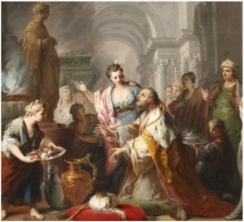

0970 BCE The most senior and noble of David’s remaining sons (son of an Aramaean princess from Geshur 2Sam3:3, the only one of David’s sons of royal blood, since Amnon had been killed by him for raping their sister Tamar), Absolom enjoys popular support, rises against David, and David flees Jerusalem, but not before installing his ally Hushai as a disinformant “adviser” to Absalom. Absalom takes over David’s harem (now there’s no turning back). David deploys Ittai and 600 Philistine mercenaries (2Sam15). Hushai discredits Achitophel; Absalom is defeated at Gilead, and is killed by Joab, whom David executes for not dealing “gently” with Absalom. David is restored, then executes all of Saul’s male descendants. The next in line of David’s sons, Adonijah, proclaims himself king (1Kings 1:5-8). Nathan reports Adonijah’s actions to Bathsheba, who convinces the senile David to authorize the crowning of her son, Solomon, in a surprise ceremony orchestrated by Nathan, Zadok and Benaiah (1Kings 1:38-40).

Uxorious Solomon worships a foreign god